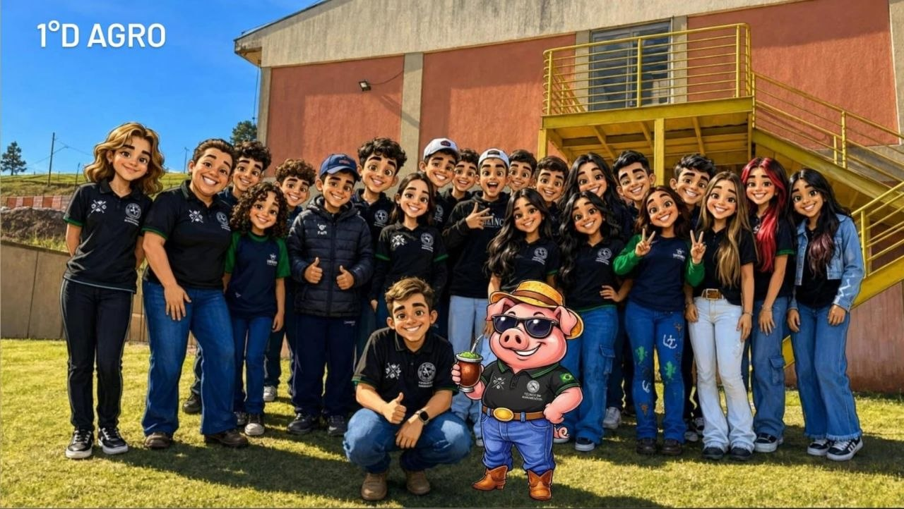
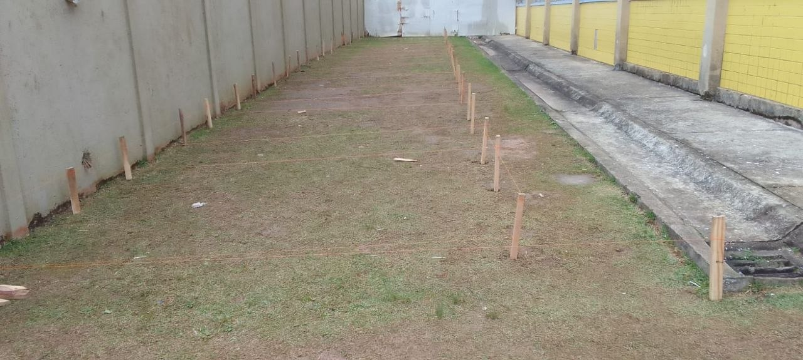
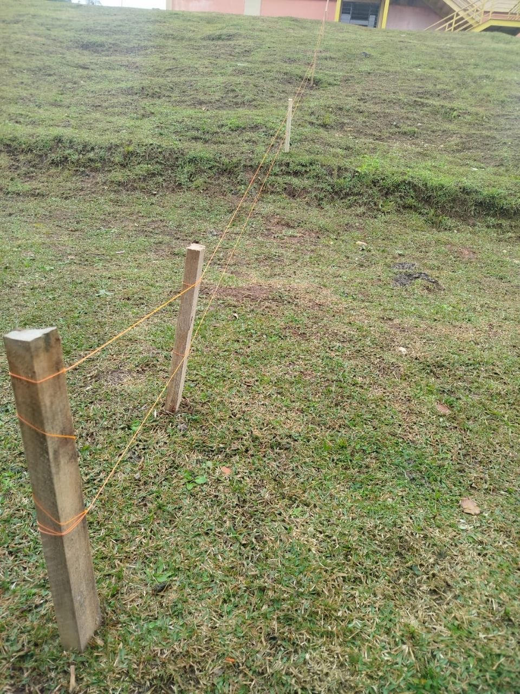
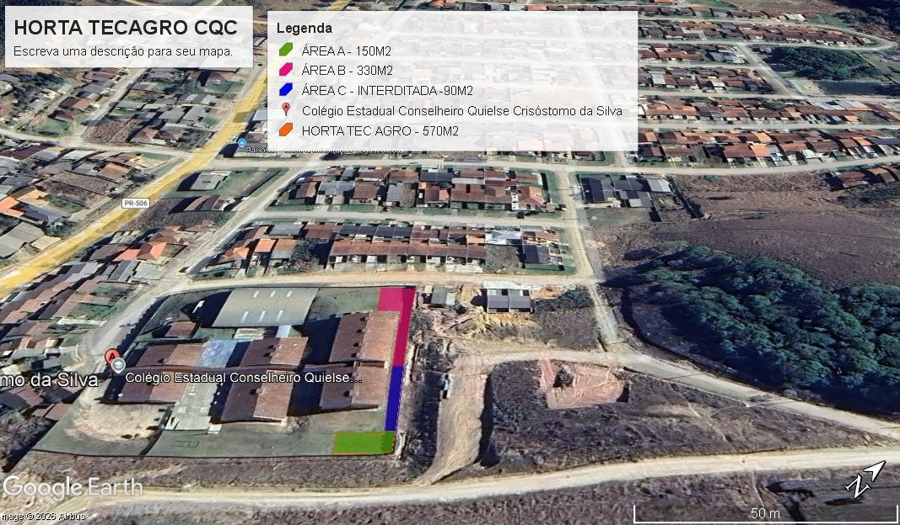
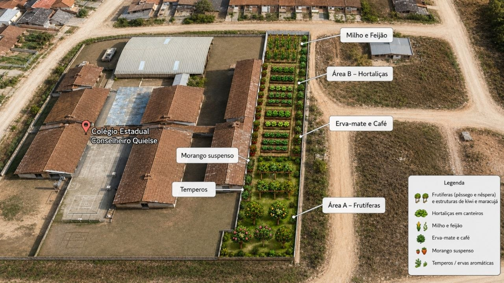

Com as atividades do curso de Técnico em Agronegócio, os estudantes do 1º D AGRO iniciaram os trabalhos para estruturar a horta do Colégio CQC.

🟢 1. Demarcação do Terreno e Piquetagem
A primeira fase prática consistiu na medição de campo, alinhamento topográfico e piquetagem com barbantes para delimitar a extensão dos canteiros e áreas de circulação.


🗺️ 2. Mapeamento Aéreo (Área de 570 m²)
Através de demarcação aérea, delimitamos uma área total de 570 m² para o projeto Horta TECAGRO CQC, subdividida em setores estratégicos:
- Área A (150 m²): Destinada a árvores frutíferas e estruturas trepadeiras.
- Área B (330 m²): Canteiros para hortaliças e cultivos de grãos.
- Área C (90 m²): Área temporariamente interditada/apoio.

🌾 3. Projeção Futura do Espaço
Elaboramos um planejamento espacial detalhado de como ficará o local quando o plantio for realizado. O projeto prevê canteiros de hortaliças, milho, feijão, erva-mate, café, além de estufas de morango suspenso e canteiros de temperos.

Acompanhe o nosso blog para ver o desenvolvimento das próximas fases: preparo do solo, adubação e o início do plantio! 🌱